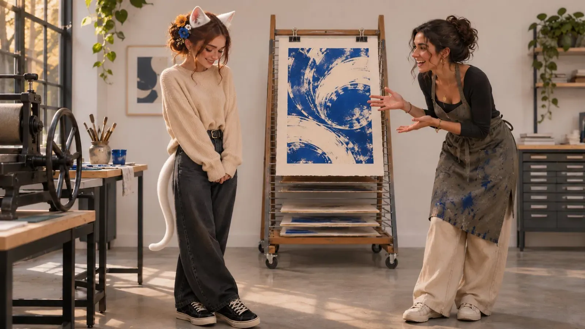

Be a Goddess
It always went the same way. Someone saw what I had made, smiled and said something kind. And I, tall, shy and still a man back then, suddenly found my shoes incredibly interesting. I pulled up my shoulders as if I could fold myself a few centimeters smaller. And then came one of three answers. I could say them in my sleep.
"Oh, it was just my job."
"It wasn't that hard."
"There are better people than me."
Three sentences like a little prayer, only prayed backwards. A normal prayer calls a goddess in. Mine politely walked her to the door, handed her her coat and told her there really had been no need to come all this way. Except she hadn't come to visit. She wanted to move in.
That's what this is about. Admiration. Taking it without feeling bad afterwards. And enjoying it without letting it go to your head. 👑

The Corner in the Shadows
Back then I stood in a dark corner. Not literally, mostly, but in my head. At the back of the room, at the edge of the picture, where the light doesn't reach. And I hoped nobody would see me. Because whoever is seen can be judged. And whoever is judged can lose.
In that corner, praise was a dangerous thing. It drew attention the way a plum cake draws wasps. So I waved it away before it could land.
I paid back every compliment immediately, with interest. "Anyone could have done that." "There was a lot of luck involved." "Wait till you see the others." I was really good at making myself smaller. It was probably the only thing I'd have let myself be praised for, if anyone had ever praised me for it.
As if admiration were a bill. As if someday someone would come knocking to collect it.
Whether others know this corner too, I can only guess. But if you just caught yourself nodding: hello. I know the spot. It's drafty, and the view is terrible.
Out of the Corner
And then I became a woman. Not overnight and not with a bang, but the way spring happens: at first you don't notice it at all, and suddenly you're sitting outside and forgot your jacket.
Something shifted that I hadn't expected. Not just how I look. But where I stand. I don't stand in the corner anymore. I stand in the room. Sometimes right in the middle of it, the light falls on me, and I don't walk away.
Admittedly, when you tower over most heads in heels, the dark corner isn't really an option anymore. You stand there like a lighthouse that decided to wear lipstick. But my height was never the problem. The problem was the way I looked at myself.
That's self-perception, and it comes before confidence. First you see yourself differently, then you carry yourself differently. If you like looking at yourself, you no longer have to hope that nobody's looking.
Being Aware of Yourself
Confidence. In German we say "selbstbewusst", and it's worth taking that word apart. It doesn't mean "loud". It doesn't mean "arrogant", and it doesn't mean "always sure" either. It literally means being aware of yourself. Knowing who you are. What you can do, what you can't, and that both belong to you.
A woman who is aware of herself doesn't have to keep proving she's worth something. And she doesn't have to keep denying it either. She just knows, the way you know where your nose is without looking in a mirror.
And here's the most beautiful part: it isn't a talent you either have or don't. You can practice it. You simply start looking at yourself. Honestly, kindly, with the eyes you'd give your best friend. Not with the ones you keep for yourself at seven in the morning in front of the bathroom mirror.
A little every day. And one day you notice you haven't been standing in the corner for a long time. ✨
All Women Are Goddesses
I don't mean that as a calendar quote. Not "You are a goddess" in glitter letters on a pink background, somewhere between a sunset and a dolphin.
I mean: every woman has something worth admiring. Every single one. The one with laugh lines and the one with a pimple on her chin. The one who has only just started calling herself that, and the one who has for fifty years. The one somebody on the internet told she doesn't count. Especially her.
Goddess doesn't mean perfect. The old goddesses were all sorts of things, jealous, moody, chaotic, and now and then they started a war by accident. But nobody ever asked them whether they really deserved the worship. They were there, and they had an effect. That was enough.
Being a goddess means: you are allowed to be seen. You don't have to apologize for taking up space. And when someone admires you, that's not a mistake you have to politely correct.
Learning to Say Thank You
When someone thanks you or praises you, don't talk it to pieces. Don't make yourself smaller than you are. You are not small. There's someone who likes what you do. Maybe even you.
And that's their decision. Their taste. You don't have to explain to them that they're wrong, just like you wouldn't tell someone they don't actually like strawberry ice cream. They just do. 🍓
There's no reason to be ashamed. Praise doesn't make you bigger, nobody grows a single centimeter from it. But it means someone values what you do. And who you are. So take it, say thank you and enjoy it.
That sounds easier than it is. So start small. Say thank you, and then stop. No "but", no "oh, it was nothing", a compliment doesn't need a package insert. At first the silence afterwards feels like an elevator stuck too long between two floors. Bear it. Over time it gets warm.
Don't throw the praise straight back either. "But you look amazing too!" is sweet, but often just a way to get rid of the hot thing quickly, like a potato fresh out of the oven. Hold on to it for a moment. You can praise back later, when you really mean it.
You don't have to be convinced right away, either. Just believe it for five minutes. What if they're right? What if you really are beautiful? What if you really did save someone's day?
And then enjoy it. The warm feeling in your belly when someone sees you isn't vanity. It's a gift, and gifts are meant to be unwrapped and enjoyed, maybe with a little rustling of the paper. 🎁 Kind messages aren't made for scrolling past. Keep them, for the days when the corner calls again. Then you read them, and the corner has to wait.
Why Goddesses Come Across as Dominant
Confident women come across as more dominant. Not because they're louder or stricter, but because they're there. They take up the room instead of pressing themselves against its edges. They hold eye contact. They say "thank you" instead of "oh, stop it". And when a woman stands in a room like that, the room arranges itself around her, whether it wants to or not.
In femdom this becomes visible, almost literally. Someone kneels before you. Kisses your boots, waits for a word, a look, permission to go on. That's worship without any detour. Now imagine a Mistress who says in that very moment: "Oh, get up, I'm not that great." The scene would be dead before it started. The poor soul at her feet wouldn't know what to do with their lips anymore.
A Mistress has to be able to accept admiration. That's not a part of the role, it's its foundation. Because whoever kneels gives something: devotion, pride, vulnerability. Waving that off basically says the gift was worth nothing.
I know both sides. I know what it's like to kneel, and what it costs to show yourself like that. That's exactly why I take it seriously when someone kneels before me. I let her stay there. I let her worship. And I enjoy it, without a guilty conscience, with a smile she has earned.
The beautiful thing is: it works without leather too. Every woman who accepts admiration without making herself small has a bit of that calm. That quiet certainty: "Yes. I know. Thank you." And now you may continue.
Goddess, Not Diva
Which leaves the question: how do you enjoy all this without letting it go to your head?
Pratchett has an answer in "Small Gods". There, gods are exactly as powerful as people truly believe in them. The great god Om never cared about his believers, only about their worship. At some point people only believe in the temples and the priests, and only one single person still believes in Om himself. So the mighty god arrives in the world as a small tortoise and lands in a vegetable garden. 🐢
I think that's the best warning you can give a goddess. Admiration isn't property. It's given to you, new every day, by people who don't have to.
Admiration is a gift, not a tax. A goddess who demands it is no goddess anymore, just a tyrant with nice hair. Nobody owes you praise. If it comes, be happy. If it doesn't, you're still you.
And the people who admire you aren't scenery. They have names, a personality, strengths and weaknesses, good days and bad days. Ask. Listen. See them. A goddess who doesn't know her believers ends up a tortoise.
Worship others too. Accepting praise and giving it don't exclude each other, quite the opposite: whoever knows how good admiration feels hands it out more generously. Heaven has room for many goddesses, and none of them gets smaller when another one shines.
And stay human. Even a goddess empties the dishwasher, makes mistakes and apologizes for them. Admiration doesn't mean you're infallible. It just means someone likes looking at you.
The difference between a goddess and a diva is actually quite simple. The diva needs admiration to feel big. The goddess is already big and is happy about it anyway.
Your Task
Yes, you. ❤️
The next time someone tells you that you're beautiful, smart, funny, warm-hearted, that you did them good: say "thank you". Just that. Leave the "but" in the drawer. Bear the silence until it gets warm.
And then take one step out of the corner. Just one. Into the light.
You're allowed to stay there. 👑
First published on X. Replies and conversation live there.